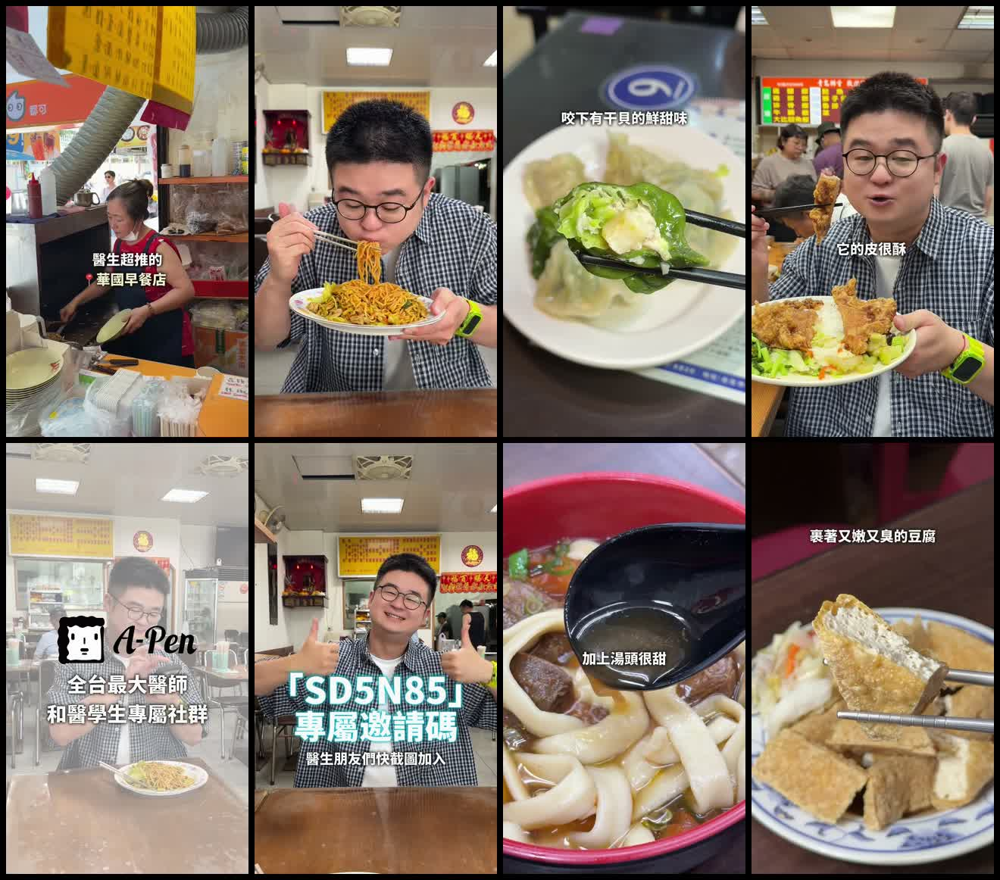

Facebook Reel｜台大醫院周邊半日覓食：青島東路、濟南路 5 間可定位店家

這份清單怎麼看
「智明愛吃愛旅行」的 Facebook Reel 以「在台大醫院附近吃一天」為題，列出華國早餐店、基隆麵食館、巧之味手工水餃、青島排骨便當、93 番茄牛肉麵與阿昌麵線。影片自述名單來自醫師社群交流；這是**創作者的推薦與置入合作脈絡**，不是店家的官方資料，也不是「醫師私藏」的可驗證事實。
我們重新核對名稱與地點後，前五間集中於中正區青島東路、濟南路二段一帶，適合當作台大醫院／善導寺附近的覓食參考；「阿昌麵線」沒有足夠畫面或定位線索能確認，故不湊成第六站。
可定位的 5 間店
- **華國早餐店**｜臺北市中正區青島東路 23 號。影片畫面可見「醫生超推的 華國早餐店」字幕；適合做早段起點。[開啟地圖](https://www.google.com/maps/search/?api=1&query=%E8%8F%AF%E5%9C%8B%E6%97%A9%E9%A4%90%E5%BA%97%20%E8%87%BA%E5%8C%97%E5%B8%82%E4%B8%AD%E6%AD%A3%E5%8D%80%E9%9D%92%E5%B3%B6%E6%9D%B1%E8%B7%AF23%E8%99%9F)
- **基隆麵食館**（影片寫作「青島東路 基隆麵食館」）｜臺北市中正區青島東路 7 之 3 號。[開啟地圖](https://www.google.com/maps/search/?api=1&query=%E9%9D%92%E5%B3%B6%E6%9D%B1%E8%B7%AF%20%E5%9F%BA%E9%9A%86%E9%BA%B5%E9%A3%9F%E9%A4%A8%20%E8%87%BA%E5%8C%97%E5%B8%82%E4%B8%AD%E6%AD%A3%E5%8D%80%E9%9D%92%E5%B3%B6%E6%9D%B1%E8%B7%AF7%E4%B9%8B3%E8%99%9F)
- **巧之味手工水餃**（濟南路位置識別）｜臺北市中正區濟南路二段 6 號。[開啟地圖](https://www.google.com/maps/search/?api=1&query=%E5%B7%A7%E4%B9%8B%E5%91%B3%E6%89%8B%E5%B7%A5%E6%B0%B4%E9%A4%83%20%E6%BF%9F%E5%8D%97%E5%BA%97%20%E8%87%BA%E5%8C%97%E5%B8%82%E4%B8%AD%E6%AD%A3%E5%8D%80%E6%BF%9F%E5%8D%97%E8%B7%AF%E4%BA%8C%E6%AE%B56%E8%99%9F)
- **青島排骨便當**｜臺北市中正區青島東路 3 之 3 號；亦可能看到「青島排骨飯」的口語寫法。[開啟地圖](https://www.google.com/maps/search/?api=1&query=%E9%9D%92%E5%B3%B6%E6%8E%92%E9%AA%A8%E4%BE%BF%E7%95%B6%20%E8%87%BA%E5%8C%97%E5%B8%82%E4%B8%AD%E6%AD%A3%E5%8D%80%E9%9D%92%E5%B3%B6%E6%9D%B1%E8%B7%AF3%E4%B9%8B3%E8%99%9F)
- **93 番茄牛肉麵**｜臺北市中正區青島東路 3 之 2 號；「蕃茄／番茄」兩種寫法皆常見。[開啟地圖](https://www.google.com/maps/search/?api=1&query=93%E7%95%AA%E8%8C%84%E7%89%9B%E8%82%89%E9%BA%B5%20%E8%87%BA%E5%8C%97%E5%B8%82%E4%B8%AD%E6%AD%A3%E5%8D%80%E9%9D%92%E5%B3%B6%E6%9D%B1%E8%B7%AF3%E4%B9%8B2%E8%99%9F)
不納入的第 6 間：阿昌麵線
影片文字只有「阿昌麵線」。可查到的同名候選店常見於文山區景美街，與前五間的中正區聚集位置並不相符；影片接觸表也沒有能確認招牌或地址的畫面。因此本文不把它寫成「台大醫院附近」店家。若有原作者定位、菜單或清晰招牌，才適合再補正。
使用建議
- 這是一帶**店名與位置的起點清單**，不是一次全吃完的推薦順位；依早餐、正餐、外帶或排隊情況挑一至兩間較實際。
- 未固定記錄價格、營業時間與必點品項：這些資訊最容易變動，請出發前用地圖或店家當日公告確認。
- 影片裡的口味描述、人氣與「醫師朋友」脈絡均屬創作者／贊助內容，不宜當成獨立的品質、醫療或官方背書。
來源與查核範圍
- [Facebook Reel 原始影片](https://www.facebook.com/reel/1373484894265964)：提供店名列單、創作者身分與影片畫面脈絡。
- 以各店名＋完整地址建立的 Google Maps 檢索連結：供讀者在出發前再次查看位置、營業狀態與最新評論。
- 本篇沒有將 Facebook 的觀看數、互動數或贊助文字當作店家品質與營業資訊的證明。